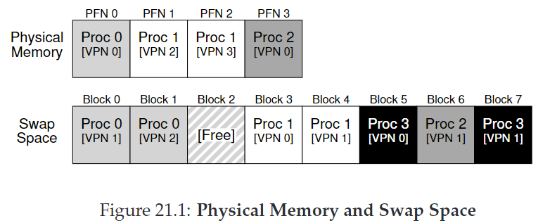

21. Beyond Physical Memory: Mechanisms
我们之前假设每个进程的地址空间都能fit进内存，现在我们要relax这个假设，我们希望支持许多并发运行的大地址空间。
为了实现这个目标，我们需要引入：内存层次（memory hierarchy）。OS需要将一部分需求量不大的地址空间藏起来。这个地方是硬盘驱动器（hard disk drive），它体积更大，但也更慢。
CRUX：如何超越物理内存？
21.1 Swap Space
我们在磁盘中保留了一一块叫做交换区（swap space）的地方，OS可以将内存中的页交换进去，或从其中交换出来。OS需要记住每个页对应的磁盘地址（disk address）。

如上图这个例子，内存中有4页，交换区中有8页。进程0，1，2共享着物理内存，同时还有一部分页保留在磁盘交换区。进程3所有的页都在磁盘，说明不在运行。
21.2 The Present Bit
我们先来回顾一下内存引用的过程：进程生成虚拟地址，硬件抽取VPN，检查TLB匹配，若hit，得到物理地址；若miss，检查页表，以VPN作索引搜索对应PTE，若page is valid，存在于物理内存，硬件抽取PFN，将其install到TLB，retry指令，得到TLB hit。
现在因为我们引入了交换区，PTE中需要有一块新的信息区present bit，如果置1，硬件得知对应page存在于物理内存，一切照旧；如果置0，说明page在磁盘中，抛出page fault，OS接手，用page-fault handler处理。
21.3 The Page Fault
不论是hardware-managed TLBs还是soft-ware managed TLBs，page fault都由OS处理。
OS用PTE中的PFN向磁盘交换区查找，发起I/O请求。当I/O完成，OS更新页表，标记该页为present，更新PFN以记录新取的页的内存位置，retry指令，得到TLB miss，更新TLB（处理page fault后更新TLB来避免这步）。最终，TLB hit。
注意，I/O进行中时，该进程会处于阻塞（blocked）状态。因此OS可以运行其他进程。也就是overlap。
21.4 What If Memory Is Full?
若内存已满，OS需要将一些page交换出去，如何选择？需要用到page-replacement policy，将在下章具体探讨。
21.5 Page Fault Control Flow
- Page-Fault Control Flow Algorithm (Hardware)
VPN = (VirtualAddress & VPN_MASK) >> SHIFT
(Success, TlbEntry) = TLB_Lookup(VPN)
if(Success == True) // TLB Hit
if (CanAccess(TlbEntry.ProtectBits) == True)
Offset = VirtualAddress & OFFSET_MASK
PhysAddr = (TlbEntry.PFN << SHIFT) | Offset
Register =AccessMemory(PhysAddr)
else
RaiseException(PROTECTION_FAULT)
else // TLB Miss
PTEAddr = PTBR + (VPN*sizeof(PTE))
PTE =AccessMemory(PTEAddr)
if (PTE.Valid == False)
RaiseException(SEGMENTATION_FAULT)
else
if (CanAccess(PTE.ProtectBits) == False)
RaiseException(PROTECTION_FAULT)
else if (PTE.Present == True)// assuming hardware-managed TLB
TLB_Insert(VPN, PTE.PFN, PTE.ProtectBits)
RetryInstruction()
else if (PTE.Present == False)
RaiseException(PAGE_FAULT)
- Page-Fault Control Flow Algorithm (Software)
PFN = FindFreePhysicalPage()
if(PFN == -1) // no free page found
PFN = EvictPage() // run replacement algorithm
DiskRead(PTE.DiskAddr, PFN)// sleep (waiting for I/O)
PTE.present = True // update page table with present
PTE.PFN = PFN // bit and translation (PFN)
RetryInstruction() // retry instruction
21.6 When Replacements Really Occur
为了保证始终有少量内存空闲，OS会设置高水位线（HW）和低水位线（LW），当可用页数少于LW，启动守护线程（swap daemon）来释放页，直到可用页数为HW。
许多系统还会聚集（cluster）一些页来同时交换，以优化性能。
21.7 Summary
以上所有工作对于进程都是透明的！